វត្ថុបំណង
- កំណត់សញ្ញាណពហុកោណនិងប្រភេទពហុកោណ
- កំណត់និយមន័យ ធាតុ និងប្រភេទត្រីកោណ
- កំណត់ផលបូករង្វាស់មុំក្នុងនិងផលបូករង្វាស់មុំក្រៅនៃត្រីកោណ
- សង់ត្រីកោណ ចតុកោណកែង និងការ៉េ
- កំណត់លក្ខណៈនៃចតុកោណ ចតុកោណកែង និងការ៉េ ។
1. ពហុកោណ
1.1. សញ្ញាណពហុកោណ
ពហុកោណ គឺជារូបធរណីមាត្របិទជិតក្នុងប្លង់ កំណត់ដោយអង្កត់ជាច្រើនតភ្ជាប់គ្នាពីចំណុចមួយទៅចំណុចមួយទៀត ។
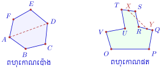
តាមរូបខាងលើ ៖
- ពហុកោណ \(\displaystyle ABCDEF\) មានអង្កត់ទ្រូង \(\displaystyle AD\) ស្ថិតនៅក្នុងផ្ទៃពហុកោណ ។ គេហៅ \(\displaystyle ABCDEF\) ថាពហុកោណប៉ោង ។
- ពហុកោណ \(\displaystyle OPQRSTUV\) មានអង្កត់ \(\displaystyle XY\) តភ្ជាប់ចំណុចពីរ \(\displaystyle X\) និង \(\displaystyle Y\) នៃពហុកោណ ស្ថិតនៅក្រៅផ្ទៃពហុកោណ ។ គេហៅ \(\displaystyle OPQRSTUV\) ថាពហុកោណផត ។
និយមន័យ
- ពហុកោណប៉ោង គឺជាពហុកោណដែលគ្រប់អង្កត់ទ្រូងរបស់វាស្ថិតនៅក្នុងផ្ទៃពហុកោណ ។
- ពហុកោណផត គឺជាពហុកោណដែលមានអង្កត់តភ្ជាប់ចំណុចពីរនៃពហុកោណ ស្ថិតនៅក្រៅផ្ទៃពហុកោណ ។
1.2. ប្រភេទពហុកោណប៉ោង
ឈ្មោះនៃពហុកោណត្រូវបានហៅទៅតាមចំនួនជ្រុងរបស់វា ៖
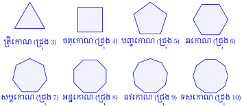
ពហុកោណដែលមាន \(\displaystyle n\) ជ្រុង ហៅថាពហុកោណ \(\displaystyle n\) ជ្រុង (\(\displaystyle n \ge 3\)) ។
2. ត្រីកោណ
2.1. និយមន័យ
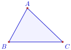
និយមន័យ ត្រីកោណ គឺជាពហុកោណដែលមានបីជ្រុង ។
ធាតុរបស់ត្រីកោណ \(\displaystyle ABC\) ៖
- កំពូលទាំងបី ៖ ចំណុច \(\displaystyle A, B, C\)
- ជ្រុងទាំងបី ៖ អង្កត់ \(\displaystyle AB, BC, CA\)
- មុំទាំងបី ៖ \(\displaystyle \angle A, \angle B, \angle C\) ។
2.2. លក្ខណៈទូទៅនៃត្រីកោណ
ក. មេដ្យាន
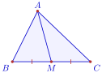
និយមន័យ មេដ្យាននៃត្រីកោណ គឺជាអង្កត់ដែលភ្ជាប់ពីកំពូលមួយទៅកាន់ចំណុចកណ្តាលនៃជ្រុងឈមនឹងកំពូលនោះ ។
ខ. កម្ពស់
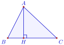
និយមន័យ កម្ពស់នៃត្រីកោណ គឺជាអង្កត់កែងគូសចេញពីកំពូលមួយទៅកាន់បន្ទាត់ដែលមានជ្រុងឈមនឹងកំពូលនោះ ។
គ. មេដ្យាទ័រ
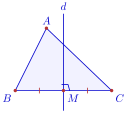
▶ មើលរូបមានចលនា៖ មេដ្យាទ័រនៃអង្កត់
និយមន័យ មេដ្យាទ័រនៃត្រីកោណ គឺជាបន្ទាត់កែងនឹងជ្រុងមួយត្រង់ចំណុចកណ្តាលនៃជ្រុងនោះ ។
ឃ. កន្លះបន្ទាត់ពុះមុំ
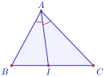
▶ មើលរូបមានចលនា៖ កន្លះបន្ទាត់ពុះមុំ
និយមន័យ កន្លះបន្ទាត់ពុះមុំនៃត្រីកោណ គឺជាកន្លះបន្ទាត់ដែលចែកមុំមួយនៃត្រីកោណជាពីរមុំប៉ុនគ្នា ។
ប្រតិបត្តិ ៖ តាមរូបខាងក្រោម ចូរប្រាប់ឈ្មោះអង្កត់និងបន្ទាត់ ៖
- ក. អង្កត់ \(\displaystyle AI\)
- ខ. អង្កត់ \(\displaystyle IJ\)
- គ. អង្កត់ \(\displaystyle JK\)
- ឃ. អង្កត់ \(\displaystyle KL\)
- ង. បន្ទាត់ \(\displaystyle d\)
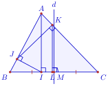
ចម្លើយ
- ក. \(\displaystyle AI\) ជាកម្ពស់នៃត្រីកោណ \(\displaystyle ABC\) ចេញពីកំពូល \(\displaystyle A\) កែងនឹង \(\displaystyle BC\) ។
- ខ. \(\displaystyle IJ\) ជាកម្ពស់នៃត្រីកោណ \(\displaystyle ABI\) ចេញពីកំពូល \(\displaystyle I\) កែងនឹង \(\displaystyle AB\) ។
- គ. \(\displaystyle JK\) ជាកម្ពស់នៃត្រីកោណ \(\displaystyle AJC\) ចេញពីកំពូល \(\displaystyle J\) កែងនឹង \(\displaystyle AC\) ។
- ឃ. \(\displaystyle KL\) ជាកម្ពស់នៃត្រីកោណ \(\displaystyle KBC\) ចេញពីកំពូល \(\displaystyle K\) កែងនឹង \(\displaystyle BC\) ។
- ង. បន្ទាត់ \(\displaystyle d\) ជាមេដ្យាទ័រនៃជ្រុង \(\displaystyle BC\) ត្រង់ចំណុចកណ្តាល \(\displaystyle M\) ។
2.3. ប្រភេទត្រីកោណ
តាមរង្វាស់ជ្រុងនិងរង្វាស់មុំ គេចែកត្រីកោណជាប្រភេទផ្សេងៗដូចខាងក្រោម ៖
ត្រីកោណធម្មតា (ឬស្កាឡែន) ៖ ជាត្រីកោណដែលមានជ្រុងទាំងបីមានរង្វាស់ខុសៗគ្នា ។
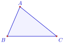
ត្រីកោណកែង ៖ ជាត្រីកោណដែលមានមុំមួយជាមុំកែង ។
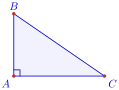
ត្រីកោណសមបាត ៖ ជាត្រីកោណដែលមានជ្រុងពីរស្មើគ្នា ។
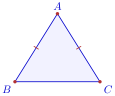
ត្រីកោណសម័ង្ស ៖ ជាត្រីកោណដែលមានជ្រុងទាំងបីស្មើគ្នា ។
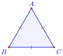
- ត្រីកោណកែងសមបាត ៖ ជាត្រីកោណកែងដែលមានជ្រុងមុំកែងទាំងពីរស្មើគ្នា និងមុំស្រួចទាំងពីរស្មើនឹង \(\displaystyle 45^\circ\) ។
- ត្រីកោណកន្លះសម័ង្ស ៖ ជាត្រីកោណកែងដែលមានមុំស្រួចមួយស្មើនឹង \(\displaystyle 30^\circ\) និងមុំស្រួចមួយទៀតស្មើនឹង \(\displaystyle 60^\circ\) ។
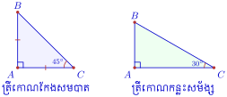
តាមរូបខាងក្រោម ចូរប្រាប់ប្រភេទនៃត្រីកោណនីមួយៗ ៖
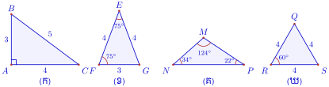
- ក. ត្រីកោណមានជ្រុង \(\displaystyle 3, 4, 5\) ជាត្រីកោណកែង (ព្រោះ \(\displaystyle 3^2 + 4^2 = 5^2\)) ។
- ខ. ត្រីកោណមានជ្រុងពីរស្មើគ្នា (\(\displaystyle 4\) និង \(\displaystyle 4\)) និងមុំបាតពីរស្មើគ្នា (\(\displaystyle 75^\circ\) និង \(\displaystyle 75^\circ\)) ជាត្រីកោណសមបាត ។
- គ. ត្រីកោណមានមុំទាលមួយ \(\displaystyle 124^\circ\) ជាត្រីកោណទាល (ឬត្រីកោណធម្មតា) ។
- ឃ. ត្រីកោណមានជ្រុងទាំងបីស្មើគ្នា (\(\displaystyle 4, 4, 4\)) ជាត្រីកោណសម័ង្ស ។
ប្រតិបត្តិ ៖ ប្រាប់ឈ្មោះត្រីកោណខាងក្រោមតាមរង្វាស់ជ្រុងនិងមុំ ៖
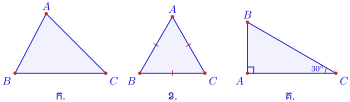
ចម្លើយ
- ក. ត្រីកោណធម្មតា (ឬត្រីកោណស្រួច)
- ខ. ត្រីកោណសម័ង្ស
- គ. ត្រីកោណកន្លះសម័ង្ស (ឬត្រីកោណកែង)
2.4. ផលបូកមុំក្នុងនិងមុំក្រៅត្រីកោណ
2.4.1. ផលបូករង្វាស់មុំក្នុងត្រីកោណ
គេមានត្រីកោណ \(\displaystyle ABC\) មួយ ។ តាមកំពូល \(\displaystyle A\) គូសបន្ទាត់ \(\displaystyle xy \parallel BC\) ។
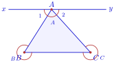
គេបាន ៖
ដោយ \(\displaystyle \angle 1 + \angle A + \angle 2 = 180^\circ\) (មុំរាប) នាំឱ្យ ៖
ទ្រឹស្តីបទ ផលបូករង្វាស់មុំក្នុងទាំងបីនៃត្រីកោណមួយស្មើនឹង \(\displaystyle 180^\circ\) ។
វិបាក
ក្នុងត្រីកោណកែង ផលបូករង្វាស់មុំស្រួចទាំងពីរស្មើនឹង \(\displaystyle 90^\circ\) (មុំបំពេញគ្នា) ។
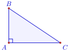
ក្នុងត្រីកោណកែងសមបាត មុំស្រួចនីមួយៗមានរង្វាស់ស្មើនឹង \(\displaystyle 45^\circ\) ។
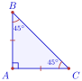
ក្នុងត្រីកោណសម័ង្ស មុំនីមួយៗមានរង្វាស់ស្មើនឹង \(\displaystyle 60^\circ\) ។
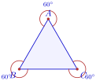
ឧទាហរណ៍ 1 ៖ រកតម្លៃនៃ \(\displaystyle x\) ក្នុងត្រីកោណខាងស្តាំ ៖
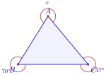
ដំណោះស្រាយ ផលបូករង្វាស់មុំក្នុងនៃត្រីកោណស្មើនឹង \(\displaystyle 180^\circ\) ៖
ដូចនេះ \(\displaystyle x = 63^\circ\) ។
ឧទាហរណ៍ 2 ៖ ត្រីកោណសមបាតមួយមានមុំបាតនីមួយៗស្មើនឹង \(\displaystyle 38^\circ\) និងមុំកំពូលស្មើនឹង \(\displaystyle 2x\) ។ គណនាតម្លៃនៃ \(\displaystyle x\) ។
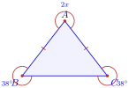
ដំណោះស្រាយ ផលបូករង្វាស់មុំក្នុងនៃត្រីកោណស្មើនឹង \(\displaystyle 180^\circ\) ៖
ដូចនេះ \(\displaystyle x = 52^\circ\) ។
2.4.2. មុំក្រៅនៃត្រីកោណ
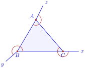
និយមន័យ មុំក្រៅនៃត្រីកោណ គឺជាមុំជាប់បន្ថែមនឹងមុំក្នុងមួយនៃត្រីកោណនោះ ។
ទ្រឹស្តីបទ រង្វាស់មុំក្រៅនៃត្រីកោណមួយ ស្មើនឹងផលបូករង្វាស់មុំក្នុងពីរដែលមិនជាប់នឹងវា ។
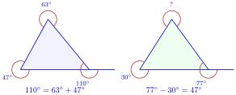
ឧទាហរណ៍ 1 ៖ គណនាតម្លៃនៃ \(\displaystyle x\) និង \(\displaystyle y\) តាមរូបខាងស្តាំ ៖
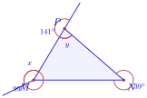
ដំណោះស្រាយ តាមទ្រឹស្តីបទមុំក្រៅនៃត្រីកោណ ៖
និង
ដូចនេះ \(\displaystyle x = 99^\circ\) និង \(\displaystyle y = 60^\circ\) ។
ឧទាហរណ៍ 2 ៖ ក្នុងត្រីកោណ \(\displaystyle MNP\) មុំក្នុងត្រង់ \(\displaystyle M\) មានរង្វាស់ \(\displaystyle 99^\circ\) និងមុំក្រៅត្រង់ \(\displaystyle P\) មានរង្វាស់ \(\displaystyle 141^\circ\) ។ គណនារង្វាស់មុំក្នុង \(\displaystyle x\) ត្រង់កំពូល \(\displaystyle N\) ។
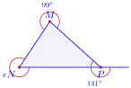
ដំណោះស្រាយ តាមទ្រឹស្តីបទមុំក្រៅនៃត្រីកោណ ៖
ដូចនេះ \(\displaystyle x = 42^\circ\) ។
ប្រតិបត្តិ ៖ គណនាតម្លៃនៃ \(\displaystyle x\) និង \(\displaystyle y\) តាមរូបនីមួយៗខាងក្រោម ៖
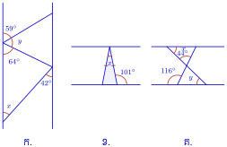
ចម្លើយ
- ក.
តាមលក្ខណៈបន្ទាត់ស្របនិងមុំក្នុងត្រីកោណ ៖
\[\begin{aligned} y &= 180^\circ - (59^\circ + 64^\circ) = 57^\circ \\ x &= 180^\circ - (59^\circ + 42^\circ) = 79^\circ \end{aligned}\]ដូចនេះ \(\displaystyle x = 79^\circ, y = 57^\circ\) ។
- ខ.
ត្រីកោណសមបាតមានមុំបាតស្មើគ្នា ៖
\[\begin{aligned} x &= 180^\circ - 2(180^\circ - 101^\circ) \\ &= 180^\circ - 2(79^\circ) \\ &= 180^\circ - 158^\circ \\ &= 22^\circ \end{aligned}\]ដូចនេះ \(\displaystyle x = 22^\circ\) ។
- គ.
តាមមុំទល់កំពូលនិងផលបូកមុំក្នុងត្រីកោណ ៖
\[\begin{aligned} x &= 180^\circ - (44^\circ + (180^\circ - 116^\circ)) \\ &= 180^\circ - (44^\circ + 64^\circ) \\ &= 72^\circ \quad (\text{ឬ } 80^\circ \text{ តាមរូបសៀវភៅពុម្ព}) \end{aligned}\]ដូចនេះ \(\displaystyle x = 80^\circ, y = 56^\circ\) តាមចម្លើយសៀវភៅពុម្ព ។
2.5. ការសង់ត្រីកោណ
ក. សង់ត្រីកោណស្គាល់រង្វាស់ជ្រុងពីរ និងមុំមួយ (ជ.ម.ជ)
សង់ត្រីកោណ \(\displaystyle ABC\) ដោយស្គាល់ \(\displaystyle AC = 5\text{ cm}, AB = 4\text{ cm}\) និង \(\displaystyle \angle A = 60^\circ\) ៖
- គូសអង្កត់ \(\displaystyle AC = 5\text{ cm}\)
- ត្រង់កំពូល \(\displaystyle A\) សង់មុំ \(\displaystyle \angle CAx = 60^\circ\)
- នៅលើកន្លះបន្ទាត់ \(\displaystyle Ax\) កំណត់ចំណុច \(\displaystyle B\) ដោយ \(\displaystyle AB = 4\text{ cm}\)
- ភ្ជាប់ចំណុច \(\displaystyle B\) ទៅកាន់ចំណុច \(\displaystyle C\) ។
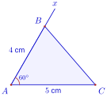
▶ មើលរូបមានចលនា៖ សង់ត្រីកោណ (ជ.ម.ជ)
ខ. សង់ត្រីកោណស្គាល់រង្វាស់មុំពីរ និងជ្រុងមួយ (ម.ជ.ម)
សង់ត្រីកោណ \(\displaystyle ABC\) ដោយស្គាល់ \(\displaystyle AC = 5\text{ cm}, \angle A = 30^\circ\) និង \(\displaystyle \angle C = 55^\circ\) ៖
- គូសអង្កត់ \(\displaystyle AC = 5\text{ cm}\)
- ត្រង់ចំណុច \(\displaystyle A\) សង់មុំ \(\displaystyle \angle CAx = 30^\circ\)
- ត្រង់ចំណុច \(\displaystyle C\) សង់មុំ \(\displaystyle \angle ACy = 55^\circ\)
- កន្លះបន្ទាត់ \(\displaystyle Ax\) និង \(\displaystyle Cy\) កាត់គ្នាត្រង់ចំណុច \(\displaystyle B\) ។
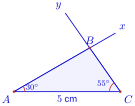
▶ មើលរូបមានចលនា៖ សង់ត្រីកោណ (ម.ជ.ម)
គ. សង់ត្រីកោណស្គាល់រង្វាស់ជ្រុងទាំងបី (ជ.ជ.ជ)
សង់ត្រីកោណ \(\displaystyle ABC\) ដោយស្គាល់ \(\displaystyle AC = 7\text{ cm}, AB = 3\text{ cm}\) និង \(\displaystyle BC = 6\text{ cm}\) ៖
- គូសអង្កត់ \(\displaystyle AC = 7\text{ cm}\)
- យក \(\displaystyle A\) ជាផ្ចិត គូសធ្នូរង្វង់កាំ \(\displaystyle 3\text{ cm}\)
- យក \(\displaystyle C\) ជាផ្ចិត គូសធ្នូរង្វង់កាំ \(\displaystyle 6\text{ cm}\)
- ធ្នូទាំងពីរកាត់គ្នាត្រង់ចំណុច \(\displaystyle B\) រួចភ្ជាប់ \(\displaystyle A\) ទៅ \(\displaystyle B\) និង \(\displaystyle C\) ទៅ \(\displaystyle B\) ។
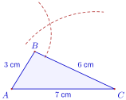
▶ មើលរូបមានចលនា៖ សង់ត្រីកោណ (ជ.ជ.ជ)
3. ចតុកោណ
3.1. សញ្ញាណ
និយមន័យ ចតុកោណ គឺជាពហុកោណដែលមានបួនជ្រុង ។
គេចែកចតុកោណជាបីប្រភេទ ៖
ចតុកោណប៉ោង ៖ គ្រប់អង្កត់ទ្រូងស្ថិតនៅក្នុងផ្ទៃចតុកោណ ។
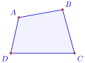
ចតុកោណខ្វែង ៖ ជ្រុងឈមពីរកាត់គ្នា ។
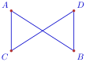
ចតុកោណផត ៖ មានអង្កត់តភ្ជាប់ចំណុចពីរនៃចតុកោណ ស្ថិតនៅក្រៅផ្ទៃចតុកោណ ។
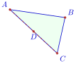
3.2. លក្ខណៈទូទៅនៃចតុកោណ
ធាតុនៃចតុកោណ \(\displaystyle ABCD\) ៖
- កំពូលទាំងបួន ៖ \(\displaystyle A, B, C, D\)
- ជ្រុងទាំងបួន ៖ \(\displaystyle AB, BC, CD, DA\)
- អង្កត់ទ្រូងទាំងពីរ ៖ \(\displaystyle AC, BD\)
- មុំទាំងបួន ៖ \(\displaystyle \angle A, \angle B, \angle C, \angle D\) ។
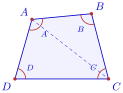
អង្កត់ទ្រូង \(\displaystyle AC\) ចែកចតុកោណ \(\displaystyle ABCD\) ជាពីរត្រីកោណ \(\displaystyle ABC\) និង \(\displaystyle ADC\) ។ ដោយផលបូកមុំក្នុងនៃត្រីកោណនីមួយៗស្មើនឹង \(\displaystyle 180^\circ\) នោះ ៖
ទ្រឹស្តីបទ ផលបូករង្វាស់មុំក្នុងទាំងបួននៃចតុកោណប៉ោងមួយស្មើនឹង \(\displaystyle 360^\circ\) ។
3.3. ប្រភេទចតុកោណប៉ោង
ដ្យាក្រាមបង្ហាញទំនាក់ទំនងនៃប្រភេទចតុកោណប៉ោង ៖
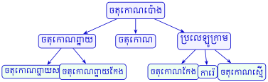
4. ចតុកោណកែង
4.1. សញ្ញាណ
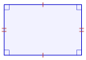
និយមន័យ ចតុកោណកែង គឺជាចតុកោណដែលមានមុំកែងបួន ។
4.2. លក្ខណៈ
លក្ខណៈ 1 ៖ ជ្រុងឈមស្របគ្នានិងមានរង្វាស់ស្មើគ្នា ។
លក្ខណៈ 2 ៖ អង្កត់ទ្រូងទាំងពីរមានប្រវែងស្មើគ្នានិងកាត់គ្នាត្រង់ចំណុចកណ្តាល ។
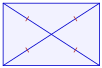
លក្ខណៈ 3 ៖ ចតុកោណកែងមានអ័ក្សឆ្លុះពីរ គឺបន្ទាត់កាត់តាមចំណុចកណ្តាលនៃជ្រុងឈមនីមួយៗ ។
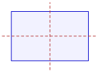
គេឱ្យចតុកោណកែង \(\displaystyle ABCD\) មានអង្កត់ទ្រូងទាំងពីរកាត់គ្នាត្រង់ \(\displaystyle E\) ។ បង្ហាញថា \(\displaystyle \triangle ABE\) ជាត្រីកោណសមបាត ។
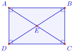
តាមលក្ខណៈនៃចតុកោណកែង អង្កត់ទ្រូងទាំងពីរមានប្រវែងស្មើគ្នា \(\displaystyle AC = BD\) ហើយកាត់គ្នាត្រង់ចំណុចកណ្តាល \(\displaystyle E\) ៖
ដោយ \(\displaystyle EA = EB\) នាំឱ្យត្រីកោណ \(\displaystyle ABE\) មានជ្រុងពីរស្មើគ្នា ។
ដូចនេះ \(\displaystyle \triangle ABE\) ជាត្រីកោណសមបាតកំពូល \(\displaystyle E\) ។
4.3. ការសង់ចតុកោណកែង
ក. សង់ចតុកោណកែងស្គាល់ប្រវែងជ្រុងពីរ
សង់ចតុកោណកែង \(\displaystyle ABCD\) ដោយស្គាល់ \(\displaystyle AD = 5\text{ cm}\) និង \(\displaystyle AB = 3.5\text{ cm}\) ៖
- គូសកែងត្រង់ \(\displaystyle A\) កំណត់កន្លះបន្ទាត់ \(\displaystyle Ax\) និង \(\displaystyle Ay\)
- នៅលើ \(\displaystyle Ax\) កំណត់ចំណុច \(\displaystyle B\) ដោយ \(\displaystyle AB = 5\text{ cm}\)
- នៅលើ \(\displaystyle Ay\) កំណត់ចំណុច \(\displaystyle D\) ដោយ \(\displaystyle AD = 3.5\text{ cm}\)
- តាម \(\displaystyle B\) គូសបន្ទាត់កែងនឹង \(\displaystyle AB\) និងតាម \(\displaystyle D\) គូសបន្ទាត់កែងនឹង \(\displaystyle AD\) កាត់គ្នាត្រង់ \(\displaystyle C\) ។
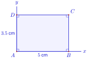
ខ. សង់ចតុកោណកែងស្គាល់ប្រវែងជ្រុងមួយ និងអង្កត់ទ្រូងមួយ
សង់ចតុកោណកែង \(\displaystyle ABCD\) ដោយស្គាល់ \(\displaystyle AD = 5\text{ cm}\) និងអង្កត់ទ្រូង \(\displaystyle AC\) បង្កើតបានមុំ \(\displaystyle \angle DAC = 30^\circ\) ៖
- គូសអង្កត់ \(\displaystyle AD = 5\text{ cm}\)
- ត្រង់ \(\displaystyle A\) សង់មុំ \(\displaystyle \angle DAx = 30^\circ\)
- ត្រង់ \(\displaystyle D\) សង់កន្លះបន្ទាត់ \(\displaystyle Dy \perp AD\) កាត់កន្លះបន្ទាត់ \(\displaystyle Ax\) ត្រង់ចំណុច \(\displaystyle C\)
- តាម \(\displaystyle A\) គូសបន្ទាត់កែងនឹង \(\displaystyle AD\) និងតាម \(\displaystyle C\) គូសបន្ទាត់កែងនឹង \(\displaystyle CD\) កាត់គ្នាត្រង់ \(\displaystyle B\) ។
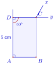
5. ការ៉េ
5.1. និយមន័យ
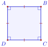
និយមន័យ ការ៉េ គឺជាចតុកោណដែលមានជ្រុងទាំងបួនស្មើគ្នា និងមុំទាំងបួនជាមុំកែង ។
5.2. លក្ខណៈការ៉េ
លក្ខណៈ 1 ៖ ជ្រុងទាំងបួនមានរង្វាស់ស្មើគ្នា ហើយជ្រុងឈមស្របគ្នា ។
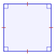
លក្ខណៈ 2 ៖ អង្កត់ទ្រូងទាំងពីរមានប្រវែងស្មើគ្នា កាត់គ្នាត្រង់ចំណុចកណ្តាល និងកែងគ្នាទៅវិញទៅមក ។
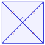
លក្ខណៈ 3 ៖ ការ៉េមានអ័ក្សឆ្លុះបួន គឺបន្ទាត់កាត់តាមចំណុចកណ្តាលនៃជ្រុងឈមពីរ និងបន្ទាត់ទ្រូងទាំងពីរ ។
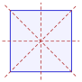
គេឱ្យការ៉េ \(\displaystyle MNPQ\) មានអង្កត់ទ្រូងកាត់គ្នាត្រង់ \(\displaystyle O\) ។ បង្ហាញថា \(\displaystyle \triangle MNO\) ជាត្រីកោណកែងសមបាត ។
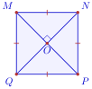
តាមលក្ខណៈនៃការ៉េ ៖
- អង្កត់ទ្រូងកែងគ្នាត្រង់ចំណុចកណ្តាល \(\displaystyle O\) នាំឱ្យ \(\displaystyle MO \perp NO\) គឺ \(\displaystyle \angle MON = 90^\circ\)
- អង្កត់ទ្រូងមានប្រវែងស្មើគ្នា នាំឱ្យ \(\displaystyle OM = ON\) ។
ត្រីកោណ \(\displaystyle MNO\) មានមុំមួយជាមុំកែង និងជ្រុងពីរស្មើគ្នា ។
ដូចនេះ \(\displaystyle \triangle MNO\) ជាត្រីកោណកែងសមបាតត្រង់ \(\displaystyle O\) ។
5.3. ការសង់ការ៉េ
ក. សង់ការ៉េស្គាល់រង្វាស់ជ្រុងមួយ
សង់ការ៉េ \(\displaystyle ABCD\) មានជ្រុង \(\displaystyle 4\text{ cm}\) ៖
- គូសកែងត្រង់ \(\displaystyle A\) កំណត់កន្លះបន្ទាត់ \(\displaystyle Ax\) និង \(\displaystyle Ay\)
- នៅលើ \(\displaystyle Ax\) កំណត់ចំណុច \(\displaystyle B\) ដោយ \(\displaystyle AB = 4\text{ cm}\)
- នៅលើ \(\displaystyle Ay\) កំណត់ចំណុច \(\displaystyle D\) ដោយ \(\displaystyle AD = 4\text{ cm}\)
- យក \(\displaystyle B\) និង \(\displaystyle D\) ជាផ្ចិត គូសធ្នូរង្វង់កាំ \(\displaystyle 4\text{ cm}\) កាត់គ្នាត្រង់ \(\displaystyle C\) រួចភ្ជាប់ \(\displaystyle B\) ទៅ \(\displaystyle C\) និង \(\displaystyle D\) ទៅ \(\displaystyle C\) ។
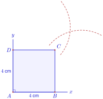
ខ. សង់ការ៉េស្គាល់ប្រវែងអង្កត់ទ្រូងមួយ
សង់ការ៉េ \(\displaystyle ABCD\) ចារឹកក្នុងរង្វង់ ដោយស្គាល់អង្កត់ទ្រូង \(\displaystyle AC = 6\text{ cm}\) ៖
- គូសអង្កត់ផ្ចិត \(\displaystyle AC = 6\text{ cm}\) នៃរង្វង់ផ្ចិត \(\displaystyle O\) (កាំ \(\displaystyle 3\text{ cm}\))
- សង់មេដ្យាទ័រនៃ \(\displaystyle AC\) កាត់រង្វង់ត្រង់ចំណុច \(\displaystyle B\) និង \(\displaystyle D\)
- ភ្ជាប់ចំណុច \(\displaystyle A, B, C, D\) ជាលំដាប់ គេបានការ៉េ \(\displaystyle ABCD\) ។
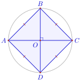
ប្រតិបត្តិ ៖ គេឱ្យចតុកោណកែង \(\displaystyle ABCD\) មានអង្កត់ទ្រូងកាត់គ្នាត្រង់ \(\displaystyle E\) ដោយ \(\displaystyle AB = 24\text{ cm}, BC = 10\text{ cm}, AE = 13\text{ cm}\) ។
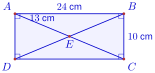
- ក. គណនាបរិមាត្រនៃចតុកោណកែង \(\displaystyle ABCD\)
- ខ. គណនាបរិមាត្រនៃត្រីកោណ \(\displaystyle ABE\)
- គ. គណនាបរិមាត្រនៃត្រីកោណ \(\displaystyle BCE\)
- ឃ. គណនាបរិមាត្រនៃត្រីកោណ \(\displaystyle DCE\) ។
ចម្លើយ
- ក.
បរិមាត្រនៃចតុកោណកែង \(\displaystyle ABCD\) ៖
\[\begin{aligned} P &= 2(AB + BC) \\ &= 2(24 + 10) \\ &= 2 \times 34 \\ &= 68\text{ cm} \end{aligned}\]ដូចនេះ បរិមាត្រនៃចតុកោណកែង \(\displaystyle ABCD\) គឺ \(\displaystyle P = 68\text{ cm}\) ។
- ខ.
ក្នុងចតុកោណកែង \(\displaystyle ABCD\) អង្កត់ទ្រូងស្មើគ្នានិងកាត់គ្នាត្រង់ចំណុចកណ្តាល \(\displaystyle E\) នាំឱ្យ \(\displaystyle AE = BE = CE = DE = 13\text{ cm}\) ។ បរិមាត្រនៃត្រីកោណ \(\displaystyle ABE\) ៖
\[\begin{aligned} P_{ABE} &= AB + AE + BE \\ &= 24 + 13 + 13 \\ &= 50\text{ cm} \end{aligned}\](សម្គាល់ ៖ សៀវភៅពុម្ពសរសេរ \(\displaystyle 60\text{ cm}\) ដោយសារគិតបរិមាត្រត្រីកោណ \(\displaystyle ABC\) គឺ \(\displaystyle 24 + 10 + 26 = 60\text{ cm}\)) ។
ដូចនេះ បរិមាត្រនៃត្រីកោណ \(\displaystyle ABE\) គឺ \(\displaystyle 50\text{ cm}\) (ឬ \(\displaystyle 60\text{ cm}\) តាមសៀវភៅពុម្ព) ។
- គ.
បរិមាត្រនៃត្រីកោណ \(\displaystyle BCE\) ៖
\[\begin{aligned} P_{BCE} &= BC + BE + CE \\ &= 10 + 13 + 13 \\ &= 36\text{ cm} \end{aligned}\]ដូចនេះ បរិមាត្រនៃត្រីកោណ \(\displaystyle BCE\) គឺ \(\displaystyle 36\text{ cm}\) ។
- ឃ.
បរិមាត្រនៃត្រីកោណ \(\displaystyle DCE\) ៖
\[\begin{aligned} P_{DCE} &= CD + CE + DE \\ &= 24 + 13 + 13 \\ &= 50\text{ cm} \end{aligned}\]ដូចនេះ បរិមាត្រនៃត្រីកោណ \(\displaystyle DCE\) គឺ \(\displaystyle 50\text{ cm}\) ។
លំហាត់
គេមានត្រីកោណ \(\displaystyle REC\) កែងត្រង់ \(\displaystyle E\) ។ ចូរបំពេញ \(\displaystyle \angle R + \angle C = \dots\) ។
មើលដំណោះស្រាយ
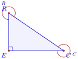
ក្នុងត្រីកោណកែង ផលបូករង្វាស់មុំស្រួចទាំងពីរស្មើនឹង \(\displaystyle 90^\circ\) ៖
\[\begin{aligned} \angle R + \angle C &= 90^\circ \end{aligned}\]ដូចនេះ \(\displaystyle \angle R + \angle C = 90^\circ\) ។
គេមានត្រីកោណសម័ង្ស \(\displaystyle MOS\) ។ គណនារង្វាស់មុំក្នុងនីមួយៗនៃត្រីកោណសម័ង្ស \(\displaystyle MOS\) ។
មើលដំណោះស្រាយ
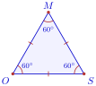
ត្រីកោណសម័ង្សមានមុំក្នុងទាំងបីប៉ុនគ្នា ហើយផលបូកមុំក្នុងនៃត្រីកោណស្មើនឹង \(\displaystyle 180^\circ\) ៖
\[\begin{aligned} \angle M = \angle O = \angle S &= \frac{180^\circ}{3} \\ &= 60^\circ \end{aligned}\]ដូចនេះ មុំក្នុងនីមួយៗនៃត្រីកោណសម័ង្ស \(\displaystyle MOS\) មានរង្វាស់ស្មើនឹង \(\displaystyle 60^\circ\) (គឺ \(\displaystyle \angle M = \angle O = \angle S = 60^\circ\)) ។
សង់ត្រីកោណសមបាត \(\displaystyle ISO\) ដោយដឹងថា \(\displaystyle IS = IO = 52\text{ mm}\) និង \(\displaystyle OS = 32\text{ mm}\) រួចគណនាកម្ពស់ចេញពី \(\displaystyle I\) ។
មើលដំណោះស្រាយ
របៀបសង់ ៖
- គូសបាត \(\displaystyle OS = 32\text{ mm}\)
- យក \(\displaystyle O\) និង \(\displaystyle S\) ជាផ្ចិត គូសធ្នូរង្វង់កាំ \(\displaystyle 52\text{ mm}\) កាត់គ្នាត្រង់ចំណុច \(\displaystyle I\)
- ភ្ជាប់ \(\displaystyle I\) ទៅ \(\displaystyle O\) និង \(\displaystyle I\) ទៅ \(\displaystyle S\) គេបានត្រីកោណសមបាត \(\displaystyle ISO\) ។
គណនាកម្ពស់ចេញពី \(\displaystyle I\) ៖
តាង \(\displaystyle H\) ជាចំណុចកណ្តាលនៃជ្រុងបាត \(\displaystyle OS\) នោះ \(\displaystyle IH\) ជាកម្ពស់ចេញពី \(\displaystyle I\) កែងនឹង \(\displaystyle OS\) ត្រង់ \(\displaystyle H\) ៖
\[\begin{aligned} OH &= \frac{OS}{2} = \frac{32}{2} = 16\text{ mm} \end{aligned}\]អនុវត្តទ្រឹស្តីបទពីតាករក្នុងត្រីកោណកែង \(\displaystyle IHO\) ៖
\[\begin{aligned} IH^2 + OH^2 &= IO^2 \\ IH^2 + 16^2 &= 52^2 \\ IH^2 + 256 &= 2704 \\ IH^2 &= 2704 - 256 \\ &= 2448 \\ IH &= \sqrt{2448} \approx 49.5\text{ mm} \approx 4.95\text{ cm} \end{aligned}\]ដូចនេះ កម្ពស់ចេញពី \(\displaystyle I\) គឺ \(\displaystyle IH = \sqrt{2448} \approx 49.5\text{ mm}\) (ឬ \(\displaystyle 4.95\text{ cm}\)) ។
សង់ត្រីកោណសម័ង្ស \(\displaystyle OUI\) ដោយដឹងថា \(\displaystyle IO = 4\text{ cm}\) រួចគូសមេដ្យានចេញពី \(\displaystyle O\) ។
មើលដំណោះស្រាយ
របៀបសង់ ៖
- គូសអង្កត់ \(\displaystyle IO = 4\text{ cm}\)
- យក \(\displaystyle I\) និង \(\displaystyle O\) ជាផ្ចិត គូសធ្នូរង្វង់កាំ \(\displaystyle 4\text{ cm}\) កាត់គ្នាត្រង់ \(\displaystyle U\)
- ភ្ជាប់ \(\displaystyle U\) ទៅ \(\displaystyle I\) និង \(\displaystyle U\) ទៅ \(\displaystyle O\) គេបានត្រីកោណសម័ង្ស \(\displaystyle OUI\) ដែលមានជ្រុងទាំងបីស្មើនឹង \(\displaystyle 4\text{ cm}\) ។
- កំណត់ចំណុចកណ្តាល \(\displaystyle M\) នៃជ្រុងឈម \(\displaystyle UI\) (\(\displaystyle MI = MU = 2\text{ cm}\)) រួចភ្ជាប់អង្កត់ \(\displaystyle OM\) គេបានមេដ្យានចេញពីកំពូល \(\displaystyle O\) ។
ដូចនេះ អង្កត់ \(\displaystyle OM\) គឺជាមេដ្យានចេញពីកំពូល \(\displaystyle O\) នៃត្រីកោណសម័ង្ស \(\displaystyle OUI\) ។
សង់ត្រីកោណកែង \(\displaystyle REC\) កែងត្រង់ \(\displaystyle E\) ដោយដឹងថា \(\displaystyle ER = 6\text{ cm}\) និង \(\displaystyle EC = 8\text{ cm}\) រួចគណនាប្រវែងអ៊ីប៉ូតេនុស ។
មើលដំណោះស្រាយ
របៀបសង់ ៖
- គូសអង្កត់ \(\displaystyle EC = 8\text{ cm}\)
- ត្រង់ \(\displaystyle E\) សង់កន្លះបន្ទាត់កែងនឹង \(\displaystyle EC\) រួចកំណត់ចំណុច \(\displaystyle R\) ដោយ \(\displaystyle ER = 6\text{ cm}\)
- ភ្ជាប់ចំណុច \(\displaystyle R\) ទៅកាន់ចំណុច \(\displaystyle C\) គេបានអ៊ីប៉ូតេនុស \(\displaystyle RC\) ។
គណនាប្រវែងអ៊ីប៉ូតេនុស \(\displaystyle RC\) ៖
តាមទ្រឹស្តីបទពីតាករក្នុងត្រីកោណកែង \(\displaystyle REC\) ៖
\[\begin{aligned} RC^2 &= ER^2 + EC^2 \\ &= 6^2 + 8^2 \\ &= 36 + 64 \\ &= 100 \\ RC &= \sqrt{100} \\ &= 10\text{ cm} \end{aligned}\]ដូចនេះ ប្រវែងអ៊ីប៉ូតេនុសគឺ \(\displaystyle RC = 10\text{ cm}\) ។
សង់ត្រីកោណ \(\displaystyle LAC\) ដោយដឹងថា \(\displaystyle LA = 6\text{ cm}, AC = 8\text{ cm}\) និង \(\displaystyle CL = 11\text{ cm}\) រួចគណនាប្រវែងបរិមាត្រត្រីកោណ ។
មើលដំណោះស្រាយ
របៀបសង់ ៖
- គូសអង្កត់ \(\displaystyle CL = 11\text{ cm}\)
- យក \(\displaystyle C\) ជាផ្ចិត គូសធ្នូរង្វង់កាំ \(\displaystyle 8\text{ cm}\)
- យក \(\displaystyle L\) ជាផ្ចិត គូសធ្នូរង្វង់កាំ \(\displaystyle 6\text{ cm}\)
- ធ្នូទាំងពីរកាត់គ្នាត្រង់ចំណុច \(\displaystyle A\) រួចភ្ជាប់ \(\displaystyle A\) ទៅ \(\displaystyle C\) និង \(\displaystyle A\) ទៅ \(\displaystyle L\) ។
គណនាបរិមាត្រត្រីកោណ ៖
\[\begin{aligned} P &= LA + AC + CL \\ &= 6 + 8 + 11 \\ &= 25\text{ cm} \end{aligned}\]ដូចនេះ បរិមាត្រនៃត្រីកោណ \(\displaystyle LAC\) គឺ \(\displaystyle P = 25\text{ cm}\) ។
ក្នុងត្រីកោណមួយមុំមួយមានរង្វាស់ \(\displaystyle 29^\circ\) មុំមួយទៀតមានរង្វាស់ \(\displaystyle 57^\circ\) ។ គណនារង្វាស់មុំទីបី ។
មើលដំណោះស្រាយ
តាង \(\displaystyle \alpha\) ជារង្វាស់មុំទីបីនៃត្រីកោណ ។ ផលបូករង្វាស់មុំក្នុងនៃត្រីកោណស្មើនឹង \(\displaystyle 180^\circ\) ៖
\[\begin{aligned} \alpha + 29^\circ + 57^\circ &= 180^\circ \\ \alpha + 86^\circ &= 180^\circ \\ \alpha &= 180^\circ - 86^\circ \\ &= 94^\circ \end{aligned}\]ដូចនេះ រង្វាស់មុំទីបីគឺ \(\displaystyle 94^\circ\) ។
មុំកំពូលនៃត្រីកោណសមបាតមួយមានរង្វាស់ \(\displaystyle 2/3\) នៃរង្វាស់មុំកែង ។ គណនារង្វាស់មុំបាតនៃត្រីកោណ ។
មើលដំណោះស្រាយ
រង្វាស់មុំកែងគឺ \(\displaystyle 90^\circ\) នាំឱ្យមុំកំពូល \(\displaystyle A\) មានរង្វាស់ ៖
\[\begin{aligned} A &= \frac{2}{3} \times 90^\circ \\ &= 60^\circ \end{aligned}\]ក្នុងត្រីកោណសមបាត មុំបាតទាំងពីរស្មើគ្នា (\(\displaystyle B = C\)) ៖
\[\begin{aligned} B + C &= 180^\circ - A \\ &= 180^\circ - 60^\circ \\ &= 120^\circ \\ B = C &= \frac{120^\circ}{2} \\ &= 60^\circ \end{aligned}\]ដូចនេះ រង្វាស់មុំបាតនីមួយៗនៃត្រីកោណគឺ \(\displaystyle 60^\circ\) ។
មុំស្រួចមួយនៃត្រីកោណកែងមានរង្វាស់ \(\displaystyle \frac{2}{5}\) នៃរង្វាស់មុំកែង ។ គណនារង្វាស់មុំស្រួចមួយទៀតនៃត្រីកោណ ។
មើលដំណោះស្រាយ
រង្វាស់មុំកែងគឺ \(\displaystyle 90^\circ\) នាំឱ្យមុំស្រួចទីមួយមានរង្វាស់ ៖
\[\begin{aligned} \alpha &= \frac{2}{5} \times 90^\circ \\ &= 36^\circ \end{aligned}\]ក្នុងត្រីកោណកែង ផលបូករង្វាស់មុំស្រួចទាំងពីរស្មើនឹង \(\displaystyle 90^\circ\) នាំឱ្យមុំស្រួចមួយទៀត \(\displaystyle \beta\) គឺ ៖
\[\begin{aligned} \beta &= 90^\circ - \alpha \\ &= 90^\circ - 36^\circ \\ &= 54^\circ \end{aligned}\]ដូចនេះ រង្វាស់មុំស្រួចមួយទៀតនៃត្រីកោណគឺ \(\displaystyle 54^\circ\) ។
សង់ចតុកោណ \(\displaystyle ABCD\) មួយ ដោយស្គាល់ \(\displaystyle AB = 5\text{ cm}, \angle B = 70^\circ, BC = 7\text{ cm}, \angle C = 90^\circ\) និង \(\displaystyle CD = 10\text{ cm}\) ។
មើលដំណោះស្រាយ
របៀបសង់ ៖
- គូសអង្កត់ \(\displaystyle BC = 7\text{ cm}\)
- ត្រង់ \(\displaystyle B\) សង់មុំ \(\displaystyle \angle CBx = 70^\circ\) រួចនៅលើ \(\displaystyle Bx\) កំណត់ចំណុច \(\displaystyle A\) ដោយ \(\displaystyle BA = 5\text{ cm}\)
- ត្រង់ \(\displaystyle C\) សង់កន្លះបន្ទាត់ \(\displaystyle Cy \perp BC\) (មុំកែង \(\displaystyle 90^\circ\)) រួចនៅលើ \(\displaystyle Cy\) កំណត់ចំណុច \(\displaystyle D\) ដោយ \(\displaystyle CD = 10\text{ cm}\)
- ភ្ជាប់ចំណុច \(\displaystyle A\) ទៅកាន់ចំណុច \(\displaystyle D\) ។
ដូចនេះ គេបានចតុកោណ \(\displaystyle ABCD\) តាមតម្រូវការ ។
សង់ចតុកោណកែង \(\displaystyle ABCD\) ដោយស្គាល់ \(\displaystyle AB = 5\text{ cm}\) និង \(\displaystyle AD = 7\text{ cm}\) ។
មើលដំណោះស្រាយ
របៀបសង់ ៖
- គូសអង្កត់ \(\displaystyle AB = 5\text{ cm}\)
- ត្រង់ \(\displaystyle A\) សង់កន្លះបន្ទាត់ \(\displaystyle Ax \perp AB\) រួចកំណត់ចំណុច \(\displaystyle D\) ដោយ \(\displaystyle AD = 7\text{ cm}\)
- ត្រង់ \(\displaystyle B\) សង់កន្លះបន្ទាត់ \(\displaystyle By \perp AB\) រួចកំណត់ចំណុច \(\displaystyle C\) ដោយ \(\displaystyle BC = 7\text{ cm}\)
- ភ្ជាប់ចំណុច \(\displaystyle D\) ទៅកាន់ចំណុច \(\displaystyle C\) គេបានអង្កត់ \(\displaystyle CD = 5\text{ cm}\) ។
ដូចនេះ គេបានចតុកោណកែង \(\displaystyle ABCD\) ដែលមានជ្រុង \(\displaystyle 5\text{ cm}\) និង \(\displaystyle 7\text{ cm}\) ។
សង់ចតុកោណកែង \(\displaystyle ABCD\) ដោយស្គាល់ \(\displaystyle AB = 64\text{ mm}\) និង \(\displaystyle \angle BAC = 50^\circ\) ។
មើលដំណោះស្រាយ
របៀបសង់ ៖
- គូសអង្កត់ \(\displaystyle AB = 64\text{ mm} = 6.4\text{ cm}\)
- ត្រង់ \(\displaystyle B\) សង់បន្ទាត់កែង \(\displaystyle d \perp AB\)
- ត្រង់ \(\displaystyle A\) សង់មុំ \(\displaystyle \angle BAx = 50^\circ\) ។ កន្លះបន្ទាត់ \(\displaystyle Ax\) កាត់បន្ទាត់ \(\displaystyle d\) ត្រង់ចំណុច \(\displaystyle C\)
- តាម \(\displaystyle A\) គូសបន្ទាត់ស្របនឹង \(\displaystyle BC\) និងតាម \(\displaystyle C\) គូសបន្ទាត់ស្របនឹង \(\displaystyle AB\) បន្ទាត់ទាំងពីរកាត់គ្នាត្រង់ចំណុច \(\displaystyle D\) ។
ដូចនេះ គេបានចតុកោណកែង \(\displaystyle ABCD\) តាមតម្រូវការ ។
សង់ការ៉េ \(\displaystyle ABCD\) ដោយស្គាល់ជ្រុង \(\displaystyle AB = 3.5\text{ mm}\) ។
មើលដំណោះស្រាយ
របៀបសង់ ៖
- គូសអង្កត់ \(\displaystyle AB = 3.5\text{ mm}\) (ឬ \(\displaystyle 3.5\text{ cm}\) ប្រសិនបើជាកំហុសពុម្ពជំនួសសង់ទីម៉ែត្រ)
- ត្រង់ \(\displaystyle A\) សង់កន្លះបន្ទាត់កែងនឹង \(\displaystyle AB\) រួចកំណត់ចំណុច \(\displaystyle D\) ដោយ \(\displaystyle AD = AB = 3.5\text{ mm}\)
- យក \(\displaystyle B\) និង \(\displaystyle D\) ជាផ្ចិត គូសធ្នូរង្វង់កាំ \(\displaystyle 3.5\text{ mm}\) កាត់គ្នាត្រង់ចំណុច \(\displaystyle C\)
- ភ្ជាប់ \(\displaystyle B\) ទៅ \(\displaystyle C\) និង \(\displaystyle D\) ទៅ \(\displaystyle C\) ។
ដូចនេះ គេបានការ៉េ \(\displaystyle ABCD\) ដែលមានជ្រុងស្មើនឹង \(\displaystyle 3.5\text{ mm}\) (ឬ \(\displaystyle 3.5\text{ cm}\)) ។
បង្ហាញថា កន្លះបន្ទាត់ពុះមុំក្នុងនៃប្រលេឡូក្រាមមួយកំណត់បានចតុកោណកែងមួយ ។
មើលដំណោះស្រាយ
តាង \(\displaystyle ABCD\) ជាប្រលេឡូក្រាមមួយ ។
មុំក្នុងជាប់គ្នានៃប្រលេឡូក្រាមជាមុំបន្ថែមគ្នា ៖
\[\begin{aligned} \angle A + \angle B &= 180^\circ \\ \frac{\angle A}{2} + \frac{\angle B}{2} &= \frac{180^\circ}{2} = 90^\circ \end{aligned}\]តាងកន្លះបន្ទាត់ពុះនៃមុំ \(\displaystyle A\) និងមុំ \(\displaystyle B\) កាត់គ្នាត្រង់ \(\displaystyle P\) ។
ក្នុងត្រីកោណ \(\displaystyle ABP\) ផលបូកមុំក្នុងស្មើនឹង \(\displaystyle 180^\circ\) ៖
\[\begin{aligned} \angle PAB + \angle PBA + \angle APB &= 180^\circ \\ 90^\circ + \angle APB &= 180^\circ \\ \angle APB &= 90^\circ \end{aligned}\]ដូចគ្នាដែរ ៖
- កន្លះបន្ទាត់ពុះនៃមុំ \(\displaystyle B\) និងមុំ \(\displaystyle C\) កាត់គ្នាត្រង់ \(\displaystyle Q\) នោះ \(\displaystyle \angle BQC = 90^\circ\)
- កន្លះបន្ទាត់ពុះនៃមុំ \(\displaystyle C\) និងមុំ \(\displaystyle D\) កាត់គ្នាត្រង់ \(\displaystyle R\) នោះ \(\displaystyle \angle CRD = 90^\circ\)
- កន្លះបន្ទាត់ពុះនៃមុំ \(\displaystyle D\) និងមុំ \(\displaystyle A\) កាត់គ្នាត្រង់ \(\displaystyle S\) នោះ \(\displaystyle \angle DSA = 90^\circ\) ។
ចតុកោណ \(\displaystyle PQRS\) កំណត់ដោយចំណុចប្រសព្វនៃកន្លះបន្ទាត់ពុះទាំងបួន មានមុំទាំងបួនជាមុំកែង (\(\displaystyle 90^\circ\)) ។
តាមនិយមន័យ ចតុកោណដែលមានមុំកែងបួនជាចតុកោណកែង ។
ដូចនេះ កន្លះបន្ទាត់ពុះមុំក្នុងនៃប្រលេឡូក្រាមមួយកំណត់បានចតុកោណកែងមួយ ។
ផលបូករង្វាស់មុំក្នុងពីរនៃត្រីកោណមួយស្មើនឹង \(\displaystyle 130^\circ\) ហើយផលដករបស់វាស្មើនឹង \(\displaystyle 20^\circ\) ។ គណនារង្វាស់មុំក្នុងទាំងបីនៃត្រីកោណនេះ ។
មើលដំណោះស្រាយ
តាង \(\displaystyle \angle A\) និង \(\displaystyle \angle B\) ជាមុំក្នុងទាំងពីរនៃត្រីកោណនោះ (\(\displaystyle A > B\)) ៖
\[\begin{aligned} \angle A + \angle B &= 130^\circ \quad (1) \\ \angle A - \angle B &= 20^\circ \quad (2) \end{aligned}\]បូកសមីការ (1) និង (2) អង្គនិងអង្គ ៖
\[\begin{aligned} 2\angle A &= 150^\circ \\ \angle A &= \frac{150^\circ}{2} \\ &= 75^\circ \end{aligned}\]ដកសមីការ (2) ពីសមីការ (1) ៖
\[\begin{aligned} 2\angle B &= 110^\circ \\ \angle B &= \frac{110^\circ}{2} \\ &= 55^\circ \end{aligned}\]ផលបូកមុំក្នុងទាំងបីនៃត្រីកោណស្មើនឹង \(\displaystyle 180^\circ\) នាំឱ្យមុំទីបី \(\displaystyle \angle C\) គឺ ៖
\[\begin{aligned} \angle C &= 180^\circ - (\angle A + \angle B) \\ &= 180^\circ - 130^\circ \\ &= 50^\circ \end{aligned}\]ដូចនេះ រង្វាស់មុំក្នុងទាំងបីនៃត្រីកោណនេះគឺ \(\displaystyle 75^\circ, 55^\circ\) និង \(\displaystyle 50^\circ\) ។
រាប់ឈ្មោះការ៉េនិងចតុកោណកែងក្នុងរូបខាងស្តាំ ។
មើលដំណោះស្រាយ
តាមរូបធរណីមាត្រដែលបានឱ្យ ៖
- \(\displaystyle ABCD\) ជាការ៉េធំមួយ
- \(\displaystyle E, F, G, H\) ជាចំណុចកណ្តាលនៃជ្រុង \(\displaystyle AB, BC, CD, DA\) រៀងគ្នា
- \(\displaystyle EFGH\) ជាការ៉េមួយទៀតនៅខាងក្នុង
- អង្កត់ \(\displaystyle EG\) និង \(\displaystyle HF\) កាត់គ្នាត្រង់ \(\displaystyle O\) ចែកការ៉េធំជាការ៉េតូចៗចំនួន 4 ។
1. រាប់ឈ្មោះការ៉េ (សរុប 6) ៖
- ការ៉េធំ ៖ \(\displaystyle ABCD\) (1)
- ការ៉េផ្អៀងក្នុង ៖ \(\displaystyle EFGH\) (1)
- ការ៉េតូចៗទាំងបួន ៖ \(\displaystyle AEOH, EBFO, OFCG, HOGD\) (4)
2. រាប់ឈ្មោះចតុកោណកែងមិនមែនជាការ៉េ (សរុប 4) ៖
- ចតុកោណកែងផ្តេក ៖ \(\displaystyle ABFE, EFCD\) (2)
- ចតុកោណកែងឈរ ៖ \(\displaystyle AHGD, EBCG\) (2)
(សម្គាល់ ៖ ដោយការ៉េគ្រប់រូបក៏ជាចតុកោណកែងពិសេស ដូច្នេះចំនួនចតុកោណកែងសរុបទាំងអស់គឺ \(\displaystyle 6 + 4 = 10\)) ។
ដូចនេះ ក្នុងរូបនេះមាន ៖
- ការ៉េចំនួន 6 គឺ ៖ \(\displaystyle ABCD, EFGH, AEOH, EBFO, OFCG, HOGD\)
- ចតុកោណកែង (មិនមែនការ៉េ) ចំនួន 4 គឺ ៖ \(\displaystyle ABFE, EFCD, AHGD, EBCG\) (ឬសរុបចតុកោណកែងទាំងអស់ចំនួន 10) ។
ខ្លឹមសារ៖ សៀវភៅពុម្ពគណិតវិទ្យាថ្នាក់ទី៧ របស់ក្រសួងអប់រំ យុវជន និងកីឡា · វាយអត្ថបទ គូររូបភាពឡើងវិញ និងរៀបចំលើអនឡាញដោយលោកគ្រូ សាន សុខលី សម្រាប់ការសិក្សាដោយឥតគិតថ្លៃ និងមិនរកប្រាក់ចំណេញ។ មិនមែនជាការបោះពុម្ពផ្លូវការរបស់ក្រសួងទេ។